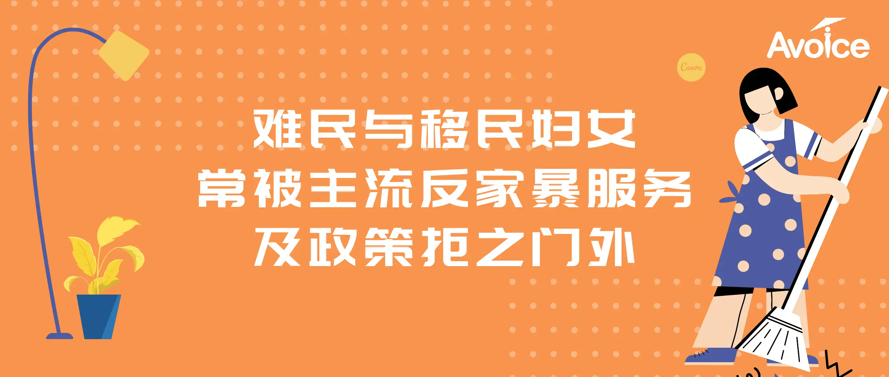
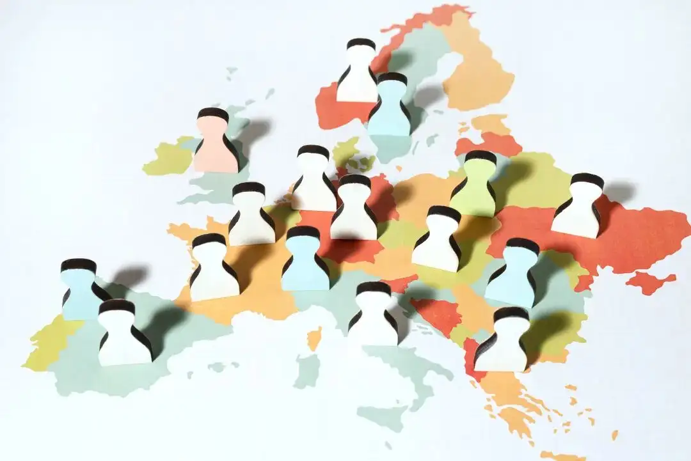
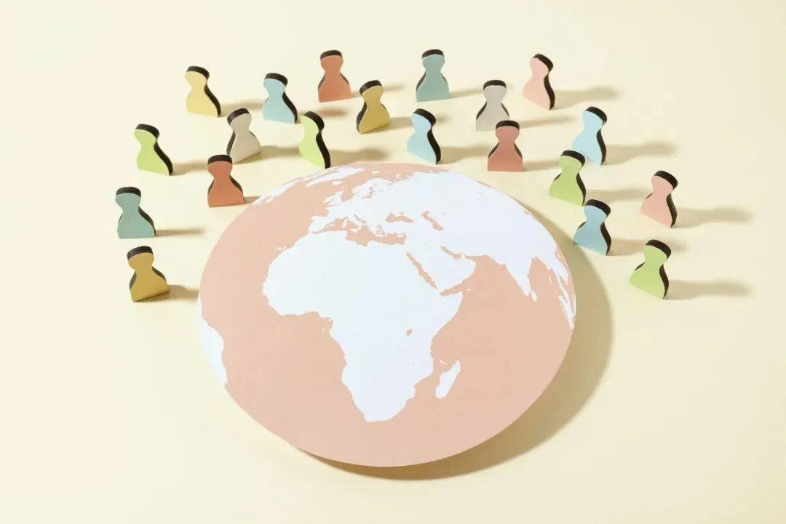
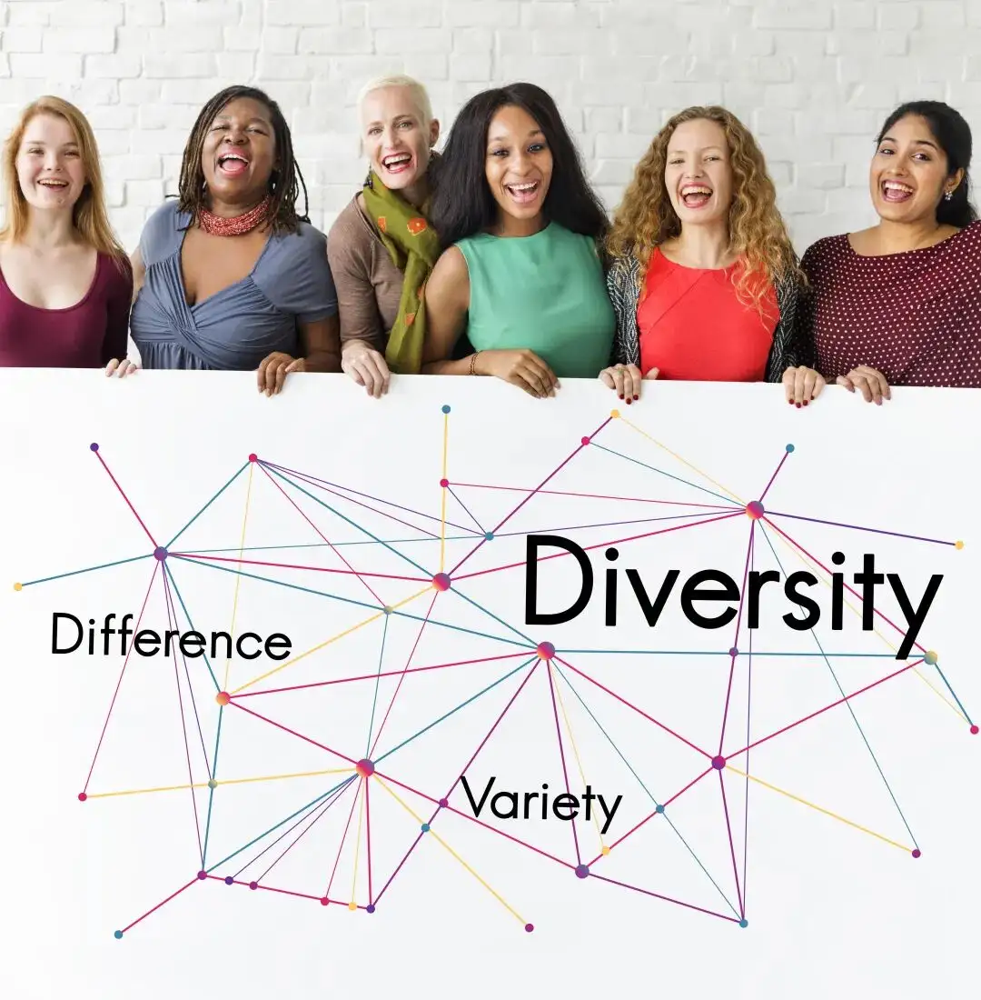
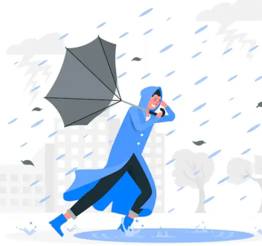
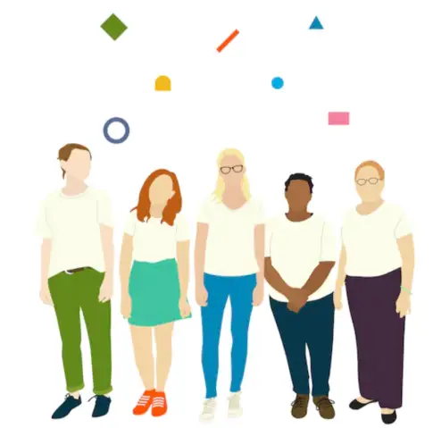

引言
introduction
在澳大利亚，围绕性别暴力的讨论愈发聚焦于多元化。然而，公共政策和社会服务主要还是基于盎格鲁裔白人妇女的遭遇。
我们的研究发表在《跨文化研究杂志》上，其中采访了 31 名一线工作者。这些工作者来自主流反家庭暴力机构、难民安置机构以及为遭受过暴力的妇女提供支持的移民机构。

一切归咎于“文化”
PART 01
我们的研究表明， 难民和移民社区中的家庭暴力问题经常被种族化，并将原因归咎于难民和移民群体的“文化”。
有工作者表示，难民或少数族裔妇女的“文化”让她们默默“忍受”暴力，而澳大利亚的盎格鲁裔妇女显然不愿逆来顺受。一位来自主流反家暴组织的盎格鲁裔工作者如是说：
也许她们并不习惯享有自由、权利和受保护的生活 [...] 我前不久注意到来自非洲国家或中东国家的女性，可能也是难民女性 [...]对于暴力的容忍度要高得多 [...] 她们在寻求帮助之前已是遍体鳞伤。
当看到白人女性在“忍受”暴力时，人们所探讨的并不是她们的“文化”背景；相反，讨论的重点在于她们脱离暴力环境可能遇到了哪些阻力。
这些阻力包括经济无法独立和无家可归，害怕自身或者孩子得不到安全保障，以及担心法律和警察的力量可能不足以保护她们。
很多人直接忽略了体制问题和更广泛的社会不平等，而将少数族裔妇女未寻求主流社会服务救济的原因归咎于她们自身的文化背景。
尽管有证据表明遭受暴力的移民和难民妇女在寻求帮助时经常会遇到特定的障碍——例如被驱逐出境的威胁、经济上或语言上的障碍。

批判看待“多元文化和语言”标签
PART 02
“多元文化和语言群体”这一分类强化了这种偏见：“文化”是外国人、难民或少数族裔特有的概念——而不是所有澳大利亚人普遍拥有的概念。
不少社工人员使用“澳大利亚人”来指代盎格鲁裔白人，然而实际上其他多元种族和身份的人显然也是澳大利亚人。
“多元文化和语言群体”这个模糊的表述将种族和文化上的少数群体与盎格鲁裔多数群体割裂开来。并且将这些少数群体内部同质化为一个单一的、泛化的类别。导致人们误以为一种方式若对一种少数群体有效，则对整个少数群体都管用。
反家庭暴力组织无需收集客户的种族、出生地或签证途径等个人数据，即使是针对移民的组织。难民和移民通常被简单地归类为“多元文化和语言群体”。这限制了我们对难民和移民妇女个人独特经历和需求的理解。
是时候批判性地思考“多元文化和语言群体”这个表述是否仍然有用，还是只是加剧了不平等？

小规模的移民服务机构不堪重负
PART 03
不同人群和需求并未经统一整合被纳入主流的服务和政策，相反，一系列针对多元文化和语言的专门服务层出不穷。
“主流的”（通常是盎格鲁裔）澳大利亚人通常被称为“主流服务”对象。“多元文化和语言”群体更多地被视为“多元文化和语言”的服务对象。
的确，专门致力于为文化少数群体提供支持的服务机构非常有限，但是我们也发现了一些可能产生的后果。
这种做法似乎加深了人们对“文化”的臆断和刻板印象。负责移民客户服务的工作人员说，客户寻求他们帮助只是因为客户的英语不流利（尽管所有服务都可以单独聘请口译员）。
一些有着少数族裔血统的工作人员表示，他们会接受有少数族裔文化背景的客户，因为他们有着共同的经历和历史。
与主流服务机构相比，针对多元文化和语言的专门服务机构通常规模较小且资金不足。
这种转诊难民和移民妇女的做法可能会使小规模的服务机构不堪重负。同时也剥夺了主流工作者在不同背景的女性身上学习的机会。
我们不应再用文化刻板印象来看待女性，也不该假定主流服务机构理应将难民和移民女性拒之门外。

是时候做出改变了
PART 04
人们经常将难民和移民群体遭受的家庭暴力归咎于他们的文化。
“多元文化和语言”这一表述使得人们不断强化以上假设——这类群体之所以遭受家暴，归根结底在于其文化背景。这会使得该群体在主流社会中被“另类化”，不为主流服务机构所接收，从而导致小规模服务机构的工作远超负荷。
是时候让遭受家暴的难民和移民妇女在主流政策和计划中被倾听、被认可了，政策和服务应该批判性地反映主流体制内部的多文化和不平等现象。

原文标题：
Refugee and migrant women are often excluded from mainstream domestic violence services and policy
原文链接：
https://theconversation.com/refugee-and-migrant-women-are-often-excluded-from-mainstream-domestic-violence-services-and-policy-187164
原文作者：
Jenny Maturi, Jenny Munro, The University of Queensland
翻译 I 赵灿畅、王圆悦Lydia
审校 I廖灿Viola
排版/封面 I 荆艺 戴翰林
图片来源 I freepik